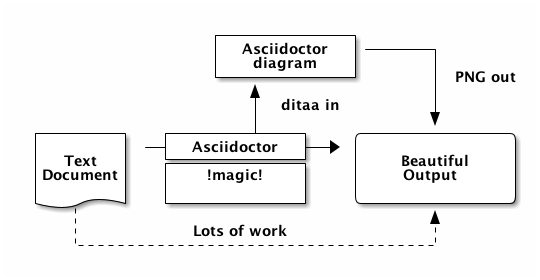
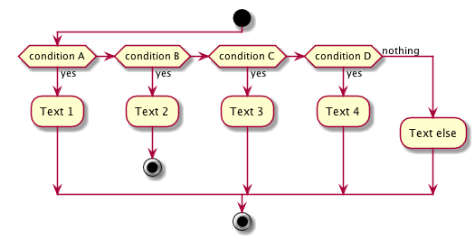

Welcome to Sfeir School
The Current Sfeir School100
TCSS
WIFI:OUR_WIFI_NAME
MDP:OUR_WIFI_PASSWORD
Speaker
Romain Lespinasse
Developer
@rlespinasse
If you like this Sfeir School, send a tweet !
#sfeirschool #thecurrentsfeirschool
@sfeir @twitterhandle @rlespinasse
TCSS
blue (default)
topic slide
red
topic slide
pink
topic slide
Background 1
With this asciidoctor content
[.bg1]
== Slide title
Slide contentBackground 2
With this asciidoctor content
[.bg2]
== Slide title
Slide contentBackground 3
With this asciidoctor content
[.bg3]
== Slide title
Slide contentBackground 4
With this asciidoctor content
[.bg4]
== Slide title
Slide contentBackground 5
With this asciidoctor content
[.bg5]
== Slide title
Slide contentBackground 6
With this asciidoctor content
[.bg6]
== Slide title
Slide contentBackground 7
With this asciidoctor content
[.bg7]
== Slide title
Slide contentBackground 8
With this asciidoctor content
[.bg8]
== Slide title
Slide contentWithout Background
in your asciidoctor document
[.nobg]
== Slide title
Slide contentSlide with specific background
[.with-background-image]
== Slide title
image::your_image.png[]// '%conceal' will hide the slide title
[%conceal.with-background-image]
== Slide title
image::your_image.png[]- set a top left area
- of text with [.area]
[%conceal.with-background-image]
== Slide title
image::your_image.png[]
[.area]
Some text- set a bottom left area
- of text with [.area-bottom]
[%conceal.with-background-image]
== Slide title
image::your_image.png[]
[.area-bottom]
Some text- set a top right area
- of text with [.area-right]
[%conceal.with-background-image]
== Slide title
image::your_image.png[]
[.area-right]
Some text- set a bottom right area
- of text with [.area-bottom-right]
[%conceal.with-background-image]
== Slide title
image::your_image.png[]
[.area-bottom-right]
Some textSlide title
with subtitle
With this asciidoctor content
== Slide title: with subtitleSlide with two sides
- You can define two texts
with this asciidoctor content
content.adoc [.axis] == Slide title * Left content + Another paragraph * Right content
Slide with multiple 'centred' columns
- School 100
- School 200
- School 300
- Institute
Slide with quote
I can do truly amazing things with my AsciiDoc source.
with this asciidoctor content
== Slide with quote
> I can do truly amazing things with my AsciiDoc source.
> -- Scott Chacon, author of Pro GitSlide with a lead paragraph
Some IMPORTANT text
with this asciidoctor content
[.lead]
Some IMPORTANT textSlide with spotlight list
- Item 1
- Item 2
- Item 3
- With this asciidoctor content
content.adoc [%build.spotlight] * Item 1 * Item 2 * Item 3
Slide with hidden list
- Item 1
- Item 2
- Item 3
- With this asciidoctor content
content.adoc [%build] * Item 1 * Item 2 * Item 3
Slide with hidden list (without the first item)
- Item 1
- Item 2
- Item 3
- With this asciidoctor content
content.adoc [build=items] * Item 1 * Item 2 * Item 3
Slide with table
| Name of Column 1 | Name of Column 2 |
|---|---|
Cell in column 1, row 1 |
Cell in column 2, row 1 |
Cell in column 1, row 2 |
Cell in column 2, row 2 |
with this asciidoctor content
|===
|Name of Column 1 |Name of Column 2
|Cell in column 1, row 1
|Cell in column 2, row 1
|Cell in column 1, row 2
|Cell in column 2, row 2
|===with default width at 60% of the slide.
Slide with ditaa diagram
 - With this asciidoctor content
content.adoc [ditaa] .... +-------------+ | Asciidoctor |-------+ | diagram | | +-------------+ | PNG out ^ | | ditaa in | | v +--------+ +--------+----+ /---------------\ | | --+ Asciidoctor +--> | | | Text | +-------------+ | Beautiful | |Document| | !magic! | | Output | | {d}| | | | | +---+----+ +-------------+ \---------------/ : ^ | Lots of work | +-----------------------------------+ ....
Slide with plantuml diagram
 - With this asciidoctor content
content.adoc [plantuml] .... start if (condition A) then (yes) :Text 1; elseif (condition B) then (yes) :Text 2; stop elseif (condition C) then (yes) :Text 3; elseif (condition D) then (yes) :Text 4; else (nothing) :Text else; endif stop ....
Text styles
- Bold text
Italic text
Some codeFocus text
Minor text information
**Bold text** __Italic text__ `Some code` [.focus]#Focus text# [.minor]#Minor text information#
Slide with some gif

- With this asciidoctor content
content.adoc image::your_gif.gif[]
Slide with some video
- With this asciidoctor content
content.adoc video::your_video.mp4[]